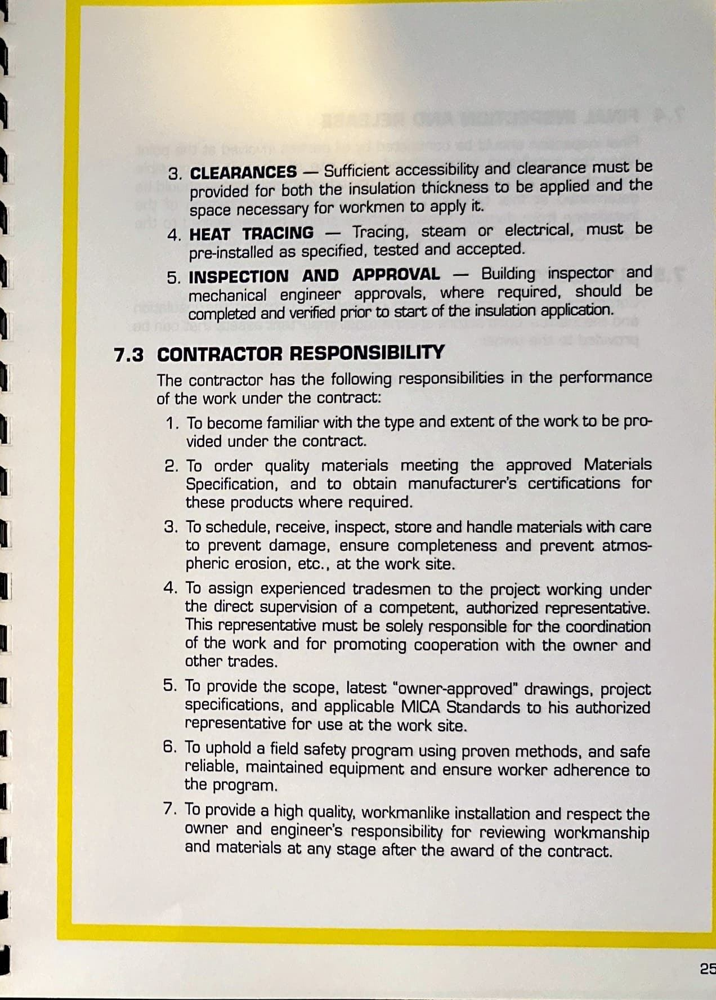
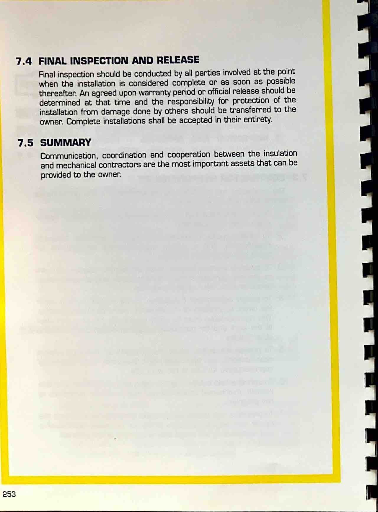
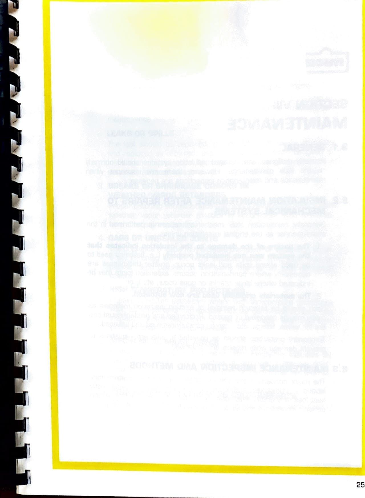

Section VII - Project Coordination
Page 261

nuca SECTION VII PROJECT COORDINATION 7.1 7.2 ORIGINAL CONTRACT COORDINATION Well writen specifications and a proper pre-bid conference can eliminate most problems that normally develop during the course of commercial or industrial insulation projects Commercial and industrial project quality control will usually involve representatives of the owner, architect or engineer, the mechanical or other prime contractor and the insulation contractor.
All should cooperate in the scheduling and coordination of the work from technical submittals through final inspection and acceptance.
The insulation contractor's responsibilities lie in the proper scheduling of his workers and coordination with crafts involved in the preparation of systems to be insulated.
The protection of the completed installation from damage that may be done by others is not the responsibility of the insulation contractor.
This will include any dam- age to an installed insulation system caused by the building envelope not being sealed properly prior to the installation.
PRE-INSULATION INSPECTION To avoid additional charges or failures of the insulation system as designed, a thorough inspection of the mechanical systems should be performed prior to installing insulation.
The inspection should include the following: 1.
SURFACES — All equipment and piping surfaces must be dry, clean and free of rust and scale.
2.
HANGERS/SUPPORTS — All hangers and supports must be of the correct size, and properly located according to the specifications.
All supports, anchors, guides or hangers on low temperature piping must be free from obstructions to allow sufficient space for condensation control insulation treatment and normal expansion and contraction of the system.
251
Page 262

7.3 CLEARANCES — Sufficient accessibility and clearance must be 3.
provided for both the insulation thickness to be applied and the space necessary for workmen to apply it.
— Tracing, steam or electrical, must be 4.
HEAT TRACING pre-installed as specified, tested and accepted.
— Building inspector and 5.
INSPECTION AND APPROVAL mechanical engineer approvals, where required, should be completed and verified prior to start of une insulaüon application.
CONTRACTOR RESPONSIBILITY The contractor has the following responsibilities in the performance of the work under the contract: To become familiar with the type and extent of the work to be pro- 1.
vided under the contract.
To order quality materials meeting the approved Materials 2.
Specification, and to obtain manufacturer's certifications for these products where required.
3.
To schedule, receive, inspect, store and handle materials with care to prevent damage, ensure completeness and prevent atmos- pheric erosion, etc., at the work site.
4.
To assign experienced tradesmen to the project working under the direct supervision of a competent, authorized representative.
This representative must be solely responsible for the coordination of the work and for promoting cooperation with the owner and other trades.
5.
To provide the scope, latest "owner-approved" drawings, project specifications, and applicable MICA Standards to his authorized representative for use at the work site.
6.
To uphold a field safety program using proven methods, and safe reliable, maintained equipment and ensure worker adherence to the program.
7.
To provide a high quality, workmanlike installation and respect the owner and engineer's responsibility for reviewing workmanship and materials at any stage after the award of the contract.
25
Page 263

7.4 FINAL INSPECTION AND RELEASE Final inspection should be conducted by all parties involved at the point when the installation is considered complete or as soon as possible thereafter.
An agreed upon warranty period or official release should be determined at that tme and the responsibility for protection of the installation from damage done by others should be transferred to the owner.
Complete installations shall be accepted in their entirety.
7.5 SUMMARY Communication, coordination and cooperation between the insulation and mechanical contractors are the most important assets that can be provided to the owner.
253
Page 264

25